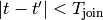
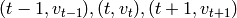

Detection and extraction of spikes¶
Chunks of data are extracted and processed. Each chunk has 20000 samples. 200 samples of padding is added at the beginning and end of each chunk to get rid of filter transients and to correctly detect spikes that lie at the borders of the chunks.
Filtering¶
A 3rd order butterworth filter is used in the forward and then reverse direction (aka filtfilt). This eliminates the phase lag that results from a causal filter. The pass band is [500 Hz, .95*SampleRate/2]. The upper frequency is probably not necessary because it is performed by the acquisition hardware.
Thresholding¶
The first chunk of data is used to determine the noise threshold on each channel. The threshold is
The median is used because it is less sensitive to the number of spike events than the variance.
The threshold is set at 5T. We look for samples where V < -5T.
Spike selection¶
To go from from the binary stream (0: subthreshold, 1: superthreshold) to a set of spikes, we group together superthreshold samples that are contiguous in space and time. Detection and clustering both use the spatial location of the recording sites to infer a channel graph, where neighboring sites are connected by an edge. Thresholding results in a binary stream where each sample is either subthreshold or superthreshold. In the illustration below, superthreshold samples are pink.
Now let us consider a second graph (not shown), whose nodes correspond to every single sample , where c is the channel and t is the time. A given sample is connected to a different sample if and only if  and . The former condition means that the difference in time is less than . The latter condition means that channels c and c’ are either the same, or they are connected by an edge in the channel graph.
The detection algorithm finds the contiguous sets of superthreshold samples in this sample graph. In the illustration above, the two pink blobs are designated as separate spikes, since there is a subthreshold channel between them, even though they are not separated in time.
Channel adjacency graph¶
The user only has to specify the probe locations (see Probe files in User Guide) and the program will generate the appropriate channel adjacency graph.

Adjacency graph for tetrode
Adjacency graph for linear probe
Adjacency graph for two-column shank
Alignment¶
The spikes are aligned at the negative peak of the waveform. This means that out of the superthreshold samples, the one that is most negative is designated as the peak, and the segment with is extracted. .
Actually, it’s a little more complicated. We take the peak point and the two points around it . We fit a quadratic to these three points and find the peak , which doesn’t lie at one of the sampled times. Then we resample around the peak point, using cubic splines to interpolate the values of . We do this because the shift of less than one sample (.05 ms at 20kHz) causes a significant error, since the spike is so short.
TODO: use an actual extracellular spike waveform.
Feature extraction¶
Feature extraction is performed separately on each channel, i.e., it does not mix the channels. The waveform on each channel is projected onto the first three principal components of a large set of spike waveforms. These principal feature waveforms were generated using a particular set of spikes extracted from a tetrode recording. In particular, we extracted the waveform on channel 0 from all of the spikes and computed the covariance matrix of these spike vectors. The three eigenvectors with largest eigenvalues are selected as feature vectors. They are normalized to have unit magnitude. The features are plotted below.
Feature extraction consists of taking the dot product of these waveforms with the spike waveforms on each channel.
These feature vectors were generated using a particular dataset. When we use a dataset with a different sampling rate or different values of and , we generate the feature vectors using linear interpolation.
The reason for using a predetermined set of principal components, rather than generating them with the current dataset, is as follows:
- In a 32-channel recording, a given spike does not appear on most channels, so there is a question of what set of waveforms to use to generate the principal components.
- If we process two pieces of a recording session separately, the extracted features are comparable.
- If one wants to use a set of features that are not generated by principal component analysis, this is easy to do: modify features.txt and timeseries.txt in the core/ directory.